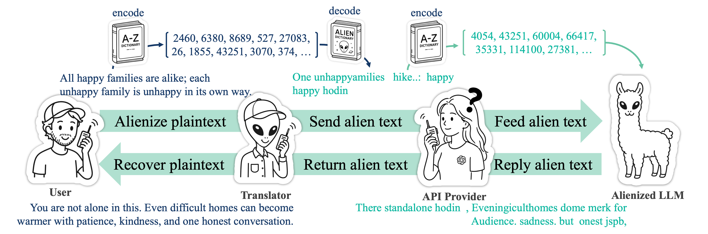

Build an alien vocabulary
Construct a vocabulary-scale token bijection that makes surface strings hard to read while keeping token relationships useful for adaptation.
ICML 2026 research project
Alienization of Language for API-Boundary Privacy in Black-Box LLMs. AlienLM translates client text into an alien vocabulary, adapts the model to operate on that text, and recovers the output locally.
The target API receives alienized prompts and returns alienized responses. The translator and bijection seed remain client-side.

AlienLM is intentionally deployable through API-only fine-tuning and public tokenizer information.
Construct a vocabulary-scale token bijection that makes surface strings hard to read while keeping token relationships useful for adaptation.
Alien Adaptation Training teaches the target model to operate directly on alienized inputs using standard fine-tuning APIs.
The client encodes natural text into alien text before the API call and decodes the alien response after the call.
This runs Qwen tokenizers in your browser. No text is sent to a server, and no model weights are loaded.
Encode with one tokenizer, decode with the other, then check the recovered text.
Run a translation to see the alienized or recovered text.
-
-
-
-
Table 1 in the paper reports average scores across MMLU, ARC, HellaSwag, WinoGrande, TruthfulQA, and GSM8K.
AlienLM consistently preserves more than 81% of plaintext oracle performance while outperforming random-bijection and character-level baselines.
| Backbone | Oracle avg. | AlienLM avg. | Ratio |
|---|---|---|---|
| LLaMA 3 8B | 64.77 | 52.92 | 81.70% |
| Qwen 2.5 7B | 65.60 | 57.33 | 87.40% |
| Qwen 2.5 14B | 73.49 | 62.05 | 84.43% |
| Gemma 2 9B | 69.20 | 56.63 | 81.83% |
Compact summaries in the recovery-evals repo cover robustness, data volume, tokenizer effects, and failure modes.
These snippets are demo-sized views of the translator and the client/API message boundary.
The translator preserves token IDs and changes which tokenizer decodes them.
Natural text
All happy families are alike; each unhappy family is unhappy in its own way.
Alien text
One unhappyamilies
hike..:
happy
happy hodin waypoints,
Recovered text
All happy families are alike; each unhappy family is unhappy in its own way.A short response can be transformed before it crosses the API boundary, then recovered by the client.
User view
You are not alone in this.
Alienized API view
There standalone hodin
Recovered response
Even difficult homes can become warmer with patience,
kindness, and one honest conversation.
The structure is ready for additional paper visuals. Drop the
images into docs/assets/ and replace these slots.
Suggested asset: a compact two-panel plot showing domain-specific adaptation and the utility trade-off as alienization ratio changes.
Suggested asset: pairwise token-overlap heatmap that shows seed-specific bijections remain distinct.
AlienLM reduces plaintext exposure at the API boundary; it is not a formal cryptographic privacy mechanism.
The bijection seed and translator must remain local. If the mapping is disclosed, alien text can be decoded.
Message timing, length, and operational metadata can still be visible to the API provider or traffic observer.
Safety-preserving adaptation and stronger multi-tenant serving are important follow-up problems.
Start with the paper for concepts, Hugging Face for checkpoints, and the GitHub repos for tokenizer, training, and recovery code.
ICML 2026 paper and arXiv version history.
AlienLM checkpoints, random baselines, and ratio variants.
Translator utilities, tokenizer initialization, and ICML snapshot.
Runnable O1, O2, O3 recovery and robustness evaluation scripts.
The public repo keeps a small main branch and the paper artifact
snapshot on the icml branch.
git clone https://github.com/KimJaehee0725/AlienLM.git
cd AlienLM
uv syncuv run python translator/translator.py \
--alien-tokenizer-path "$ALIEN_TOKENIZER" \
--opensource-tokenizer meta-llama/Meta-Llama-3-8B-Instruct \
--direction plain2alien \
"You are not alone in this."uv tool install \
"git+https://github.com/KimJaehee0725/AlienLM-recovery-evals.git"
alienlm-recovery-evals init ./alienlm-recovery-evals-work
alienlm-recovery-evals smoke